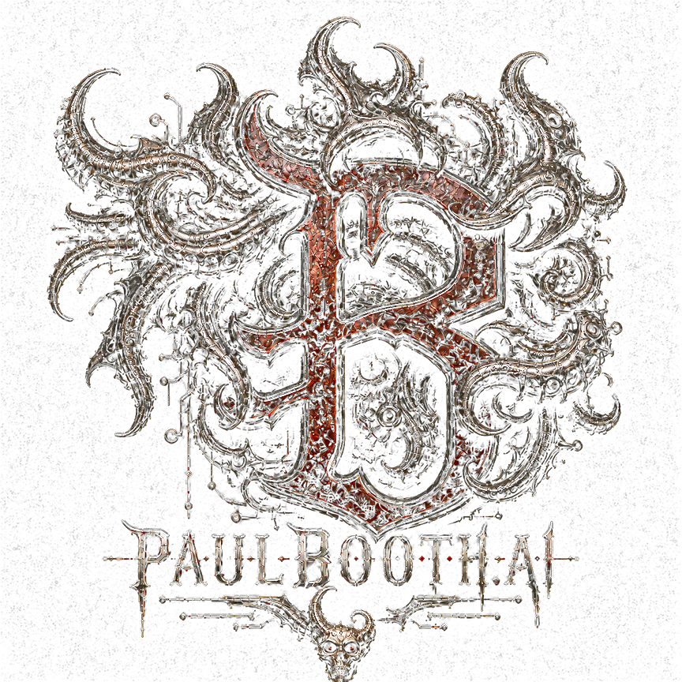

Artificial Intelligence. Biomechanical Design. Digital Evolution.
Explore the Realms
experiments
Photo Galleries
No Visions galleries have been added yet.
Motion Systems
No motion projects have been added yet.
Intelligent Machines

Artist. Creator. Explorer.
From the depths of traditional art to the frontiers of artificial intelligence.
Paul Booth is an internationally recognized artist whose work has helped define the visual language of dark surrealism and contemporary tattoo culture. Emerging from New York’s underground art and music scenes in the early 1990s, Booth became renowned for his highly detailed, high-contrast approach to tattooing—an unmistakable style built on atmosphere, anatomical distortion, psychological intensity, and uncompromising technical precision.
As the founder of Last Rites Tattoo Theatre, Booth created far more than a tattoo studio. He developed an immersive artistic environment where tattooing, fine art, music, sculpture, film, and performance could exist as parts of a single creative world. Over the course of his career, he has worked across oil painting, mixed media, sculpture, filmmaking, production design, and music, while his art has been exhibited internationally and featured in major publications and documentaries. His tattoo clientele has included prominent figures from the worlds of metal, professional wrestling, and alternative culture.
Booth’s work is rooted in the darker regions of the human experience—mortality, transformation, fear, control, ritual, identity, and the unconscious. Rather than treating darkness as spectacle, he uses it as a means of investigation. His paintings, films, environments, and tattoo compositions function as psychological landscapes, confronting the forces that shape human behavior and perception.
In recent years, Booth has expanded that investigation into artificial intelligence and emerging technology. His independent studies focus on generative AI, machine-assisted creativity, human–computer collaboration, intelligent workflow systems, neurotechnology, and the ways computational tools can extend artistic authorship without replacing it. He has applied these studies directly through the design and development of AI-powered platforms, including InkLord.ai, a professional operating system for independent tattoo artists, and ThetaForge, a neurocognitive audio platform built around self-voice affirmations, hypnagogic states, repetition, and behavioral repatterning.
Through this work, Booth is exploring a new frontier where traditional craftsmanship, neuroscience, software, sound, and artificial intelligence intersect. His practice continues to evolve across physical and digital media, but its central purpose remains unchanged: to examine the hidden structures beneath human identity and transform them into immersive, confrontational art.